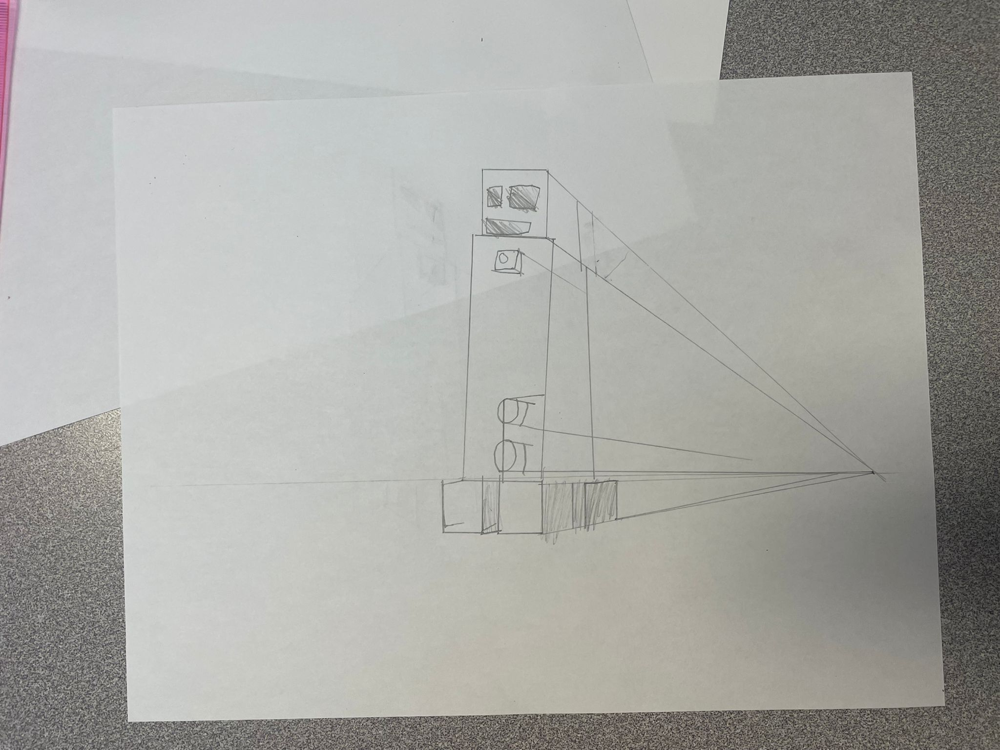
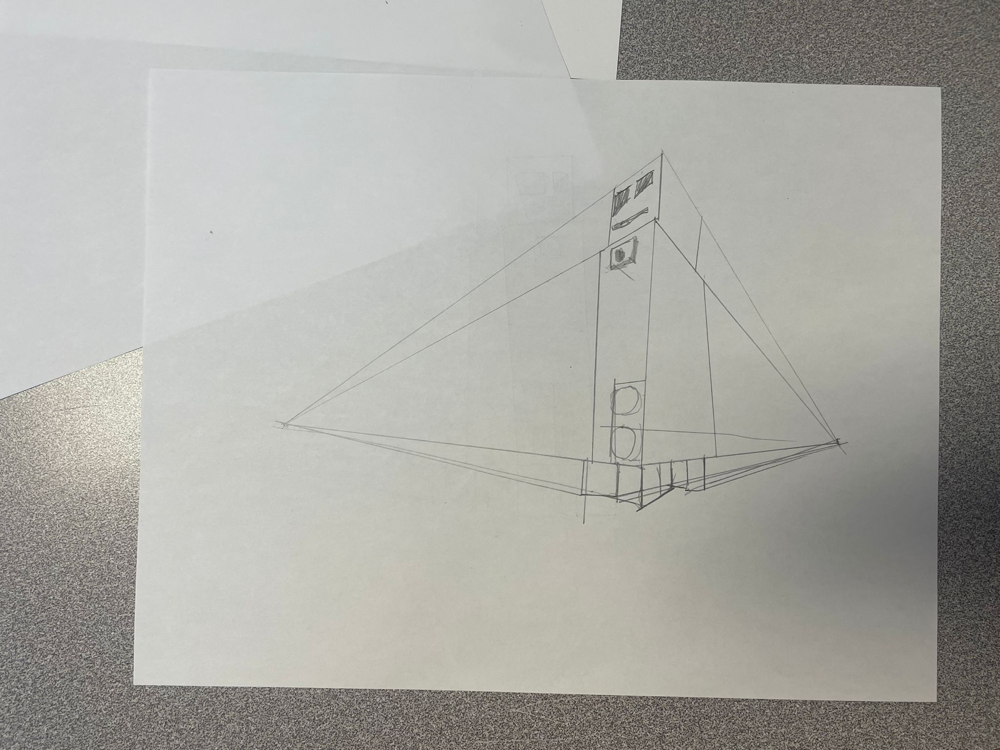
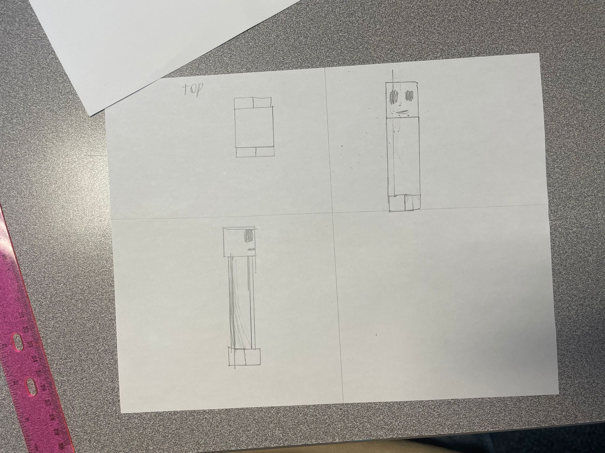
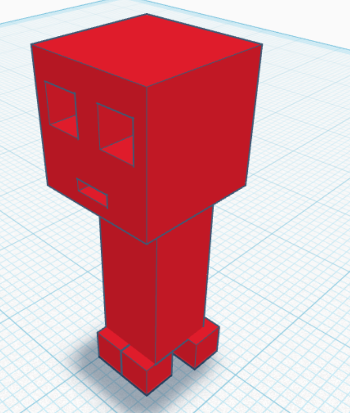
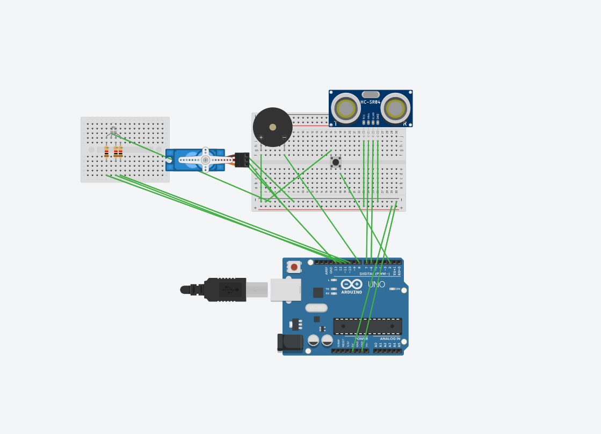
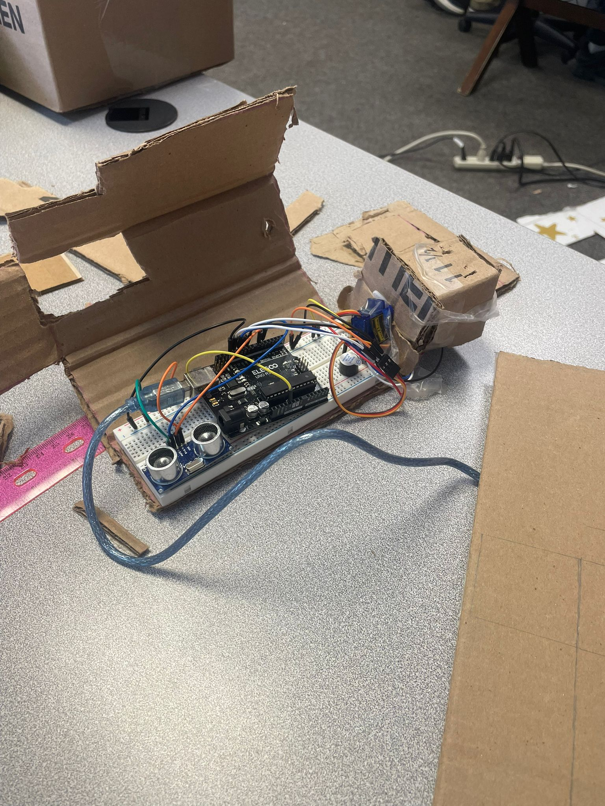

Planning and Progress
June (probably)
Came up with the idea: a device that screams when you leave your desk, or stand still. Useful for people with ADHD or productivity problems.
Later
Created sketches (ll are 1:2):



Around June 16
Made tinkercad version of circuit


June 17
Built circuit and tested ultrasonic sensor with buzzer in Tinkercad and in real life (i messed up).

June 18
Fixed buzzer bug (fake), and also started cardboard thing. Deleted button for setting the range to user because I don't like it
That's took really a lot of time. Honestly, most of things I wanted in it I haven't made, like better design, or legs, to make him stay on legs. Buzzer still not working, idk why. I'll never be proud of this project :)
References
- Arduino Buzzer Tutorial – YouTube
- Tinkercad Ultrasonic sensor Guide – tinkercad.com
- AI Prompts — a lot